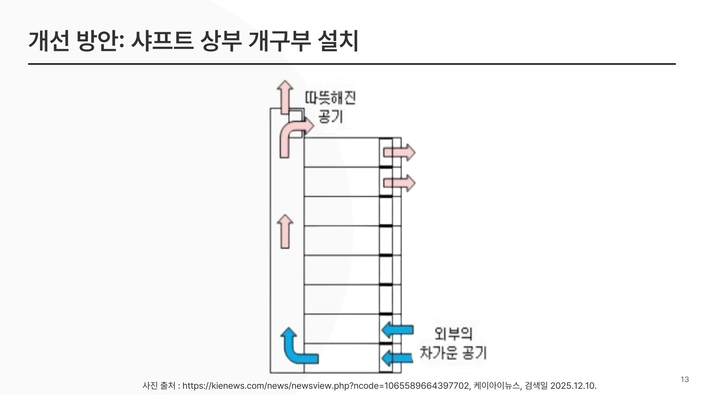

THERMAL COMFORT IN AN ELEVATOR
승강기 안의 쾌적함을 다시 설계하다
유리 승강로의 온열 환경을 측정하고, 일사와 공기 정체가 만드는 차이를 분석했습니다. 상부 환기와 비운행 시간의 공기 교환을 결합한 개선안을 제안했습니다.
- YEAR / SEMESTER
- 3학년 2학기 · 2025
- COURSE
- 건축환경조절시스템설계
- CONTRIBUTION
- 3조 팀과제
- SITE / SUBJECT
- 전남대학교 공과대학 2호관 승강기

THE IDEA
생각의 출발점
팀은 승강기 내부뿐 아니라 복도와 승강로의 높이별 온·습도를 함께 살폈습니다. 측정값을 열적 쾌적성 지표와 연결하고, 공간의 물리적 개선과 운행 상태에 따른 제어를 함께 구상했습니다.
- 01
실측으로 찾은 높이별 온도 차이
2025년 11월 16일 측정에서 정오의 승강로 4층은 31.5°C, 1층은 22.5°C였습니다. 유리면으로 유입되는 일사와 위쪽에 쌓이는 열을 개선안의 출발점으로 삼았습니다.
- 02
상부 환기와 운행 제어를 연결
승강로 상부 배기와 PMV 기반 환기 제어를 제안했습니다. 호출·재실·비운행 상태를 고려해 공기 교환이 가능한 시간을 찾고, 운행 및 방화 조건을 후속 검토사항으로 두었습니다.
- 03
작은 실험으로 가능성 확인
12월 7일 문 개방 실험에서는 320초 동안 내부 공기온도가 18.5°C에서 17.5°C로 낮아졌습니다. 이 관찰을 제안의 근거로 활용하되 실제 여름철 개선량으로 일반화하지 않았습니다.
READING THE RESULTS
관찰과 제안의 근거
| 구분 | 내용 |
|---|---|
| 높이별 실측 | 정오 승강로 4층 31.5°C / 1층 22.5°C |
| 문 개방 실험 | 320초 동안 18.5°C → 17.5°C |
| 개선 방향 | 승강로 상부 환기 + 운행 상태를 반영한 공기 교환 |
실측 날짜와 조건이 서로 다른 결과입니다. 동일 조건의 전·후 성능 시험으로 묶지 않았습니다.
PROCESS & OUTCOME
과정과 결과
사진을 누르면 크게 볼 수 있습니다.